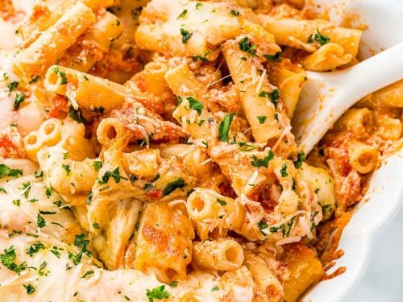

Baked Ziti

Baked Ziti (ZEE-TEE)
- 1 pound dry ziti pasta
- 1 chopped onion
- 1 pound of lean ground beef
- 2 26oz jars spaghetti sauce
- 6 ounces of sliced provolone
- 1.5 cups sour cream
- 6 ounces of shredded mozzarella
- 2 table spoons of grated parmesan cheese
STEPS:
- Bring a large pot of lightly salted water to a boil. Add ziti pasta, and cook until al dente, about 8 minutes; drain.
- Meanwhile, brown ground beef and onion in a large skillet over medium heat; stir in spaghetti sauce and simmer for 15 minutes.
- Preheat the oven to 350 degrees F (175 degrees C). Butter a 9x13-inch baking dish.
- Spread 1/2 of the ziti in the bottom of the prepared dish; top with Provolone cheese, sour cream, 1/2 of the meat sauce,
remaining ziti, mozzarella cheese, and remaining meat sauce. Top with grated Parmesan cheese.
- Bake in the preheated oven until heated through and cheeses have melted, about 30 minutes.